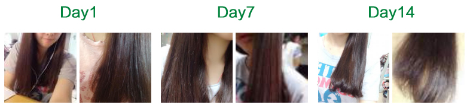
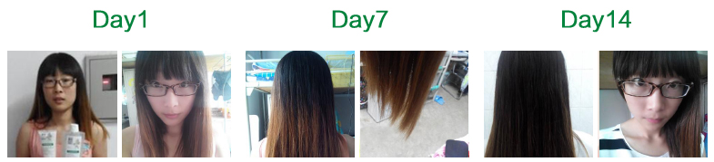
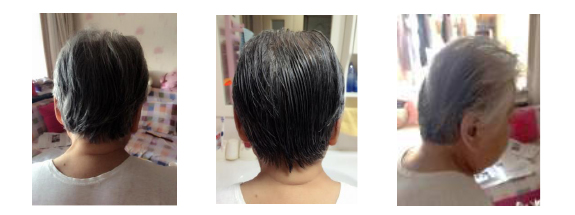
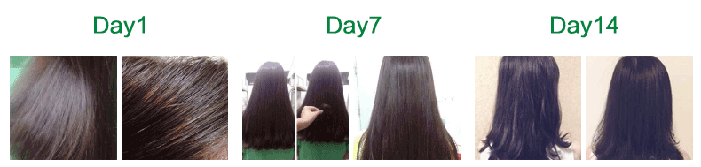

28岁年轻妈妈
发质可以说比之前的好多了，头皮没有痒，很轻松，淡淡的香味，摸起来也很顺滑，很自然，感觉很清晰，舒服。确实改善了我的发质和头皮。
年轻夫妇
和老公一起使用了，他使用了两次， 我是几乎每天使用，差不多一周使用6次。老公觉得蛮好的！说很去油，因为他头发油脂比较多，头屑没有什么。这个味道很香。

20岁大学在读女生
这款燕麦洗发水质地温和，清洁度强。护发素确实很润，洗完之后感觉头发真的有吸收进去，没有原来的滑腻感. 吹干头发后,看上去就比较润、有光泽。真的很喜欢。用了一周感觉头发柔顺、滋润很多,更有光泽感了.

干性毛糙发质
在用水冲洗的过程中觉得头发变软了不再像之前那样发硬。用毛巾擦干后觉得头发有一点干涩，但是摸起来却很柔软，发梢看起来比之前水润了。总体来说这款产品的功效还是非常不错的，因为只洗了两次头发感觉头发就比以前水润了。

60岁老奶奶
乳白色，味道很好闻，很舒服，第一次不易起泡沫，第二次到是有泡沫，易冲洗，头皮也舒服，味道挺好闻。易梳理，头发柔顺。

油性发质
头发并不显得太油腻，而以往用其他洗发水的时候第二天就会有点油了. 头屑现象有好转，并且令我很满意的是第二天头发也有淡淡的奶香味.整个过程头皮和头发都觉得舒适无刺激。